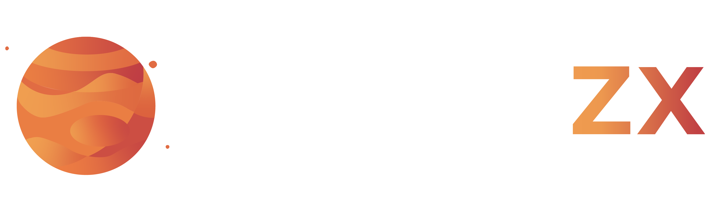

Nossa proposta para transformar o seu CX com Genesys
Este eBook apresenta as principais soluções que oferecemos com o JupiterZX e o Genesys Cloud, mostrando como essas ferramentas podem transformar a experiência do cliente (CX) na sua empresa. Descubra como estamos alinhando inovação e estratégia para entregar resultados reais e fortalecer sua comunicação interna e externa.
JupiterZX é a proposta desenvolvida pela Information Systems para transformar o CX de nosso cliente, com Genesys Cloud CX, unido às funcionalidades da plataforma Jupiter.
Com essa abordagem capacitamos nossos clientes a estabelecer operações mais ágeis e conectadas, em que cada contato interno e externo é uma oportunidade para gerar valor estratégico e impacto positivo. Nosso objetivo é ir além da entrega, queremos oferecer uma nova forma de estar ao lado do cliente, fortalecendo suas capacidades e permitindo que cada operação e interação se alinhem aos seus objetivos essenciais.
 Jupiter Assistant
Jupiter Assistant
Portal do cliente, um único lugar com todas as soluções de negócios e comunicação com a nossa plataforma de serviços.
Funcionalidades unificadas com integração de diferentes sistemas em uma unica interface.
Repositório de dados de negócio com possibilidade parametrização e gestão de premissões.
Interação de dados e integração de negócios. Criação de consultas, Vizualização e dashbords de forma simples.
Plataforma all-in-on que integra o engajamento do cliente, a gestão de força de trabalho e o gerenciamento de jornadas em um único ambiente, eliminando a necessidade de múltiplos fornecedores. Com uma arquitetura nativa da nuvem e API-first, o Genesys Cloud CX oferece flexibilidade e eficiência, permitindo que as empresas digam adeus aos sistemas legados.
A inteligência artificial nativa permeia toda a plataforma, oferecendo insights profundos e acionáveis. Com o poder da IA de Genesys Cloud, é possível prever as necessidades dos clientes, identificar tendências e tomar decisões baseadas em dados, resultando em um atendimento mais personalizado e eficiente.
A plataforma Jupiter se integra perfeitamente ao Genesys Cloud CX, ampliando a capacidade de personalização e controle em cada ponto de contato. Enquanto o Genesys oferece uma infraestrutura robusta e ferramentas avançadas como IA e automação, Jupiter permite que as empresas centralizem e organizem seus dados, unifiquem interações e ofereçam uma experiência contínua e fluida.
Nosso compromisso como empresa vai além da entrega de soluções tecnológicas; buscamos fazer a diferença no dia a dia de cada cliente.
Através da nossa abordagem JupiterZX, capacitamos as empresas a transformarem cada atendimento em um momento de conexão genuína com seus clientes, onde se sintam de fato ouvidos e valorizados.
Ao adotarem nossas soluções, as organizações não estão apenas investindo em tecnologia de ponta; elas estão abraçando a missão de humanizar o atendimento e promover experiências que verdadeiramente importam.
Acreditamos que a tecnologia pode ser a ponte que une pessoas aos seus propósitos, unindo tecnologia com histórias de vida, construindo conexões significativas em cada interação.